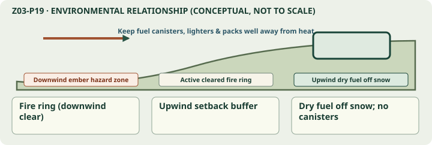

Z03-P19 · Fire and ignition · Adapted historical material
Keep fuel reserves dry off snow and outside the spark zone
Protect staged firewood from moisture while preventing stray sparks or radiant heat from igniting the reserve pile.
When it applies · Any authorized outdoor campfire in wet, snowy or windy settings.
Equipment · Cleared ring, upwind/crosswind fuel staging spot, waterproof cover if needed and extinguishing water.

Actions
- Stack spare fuel well clear of the fire ring on the upwind or crosswind side—never downwind where floating sparks and embers land directly on dry kindling.[C02, C18, ED]
- Elevate dry kindling and tinder reserves off wet snow or mud using a dry log or waterproof sheet so moisture does not wick upward into staged wood.[C03, ED]
- Keep portable stove fuel canisters, spare lighters, synthetic packs and shelter fabrics far away from open flame, radiant heat and popping embers.[C02, C15, C11]
Failure recognition · Stacking spare dry branches right beside the downwind edge of a fire ring or resting a butane canister next to coals to warm it up.[C02, C15, C18]
Verify · Confirm fuel reserves stay dry, sit outside spark-fall distance and are physically separate from pressurized fuel bottles and camp gear.[C02, C15, ED]
Stop or change course · Move reserves farther back or extinguish the fire immediately if sparks reach staged wood or wind shifts toward camp gear.[C02, C04, C18]
Evidence and editorial notes
- C02 · USDA Forest Service / Smokey Bear · Smokey Bear’s Campfire Safety Guide (agency PDF)
- Section: Build your campfire; choose a location · Conditions: Where campfires are currently permitted
Support: Use an established fire ring where required or available. Protect the area from nearby combustible materials, avoid windy conditions and keep water ready.
Limitations: Site clearances vary by fuel load, slope, and wind; no universal safe radius fits all terrain. · Conflicting evidence: None; aligns with USFS-FIRE.
Editorial note: Grounds site-selection and ring-preparation procedures. · Specialist reviewer: Fire prevention and land management
Primary source · checked 2026-11-24 - C03 · USDA Forest Service / Smokey Bear · Smokey Bear’s Campfire Safety Guide (agency PDF)
- Section: Build your campfire > Tinder, kindling, fuel · Conditions: Outdoor authorized campfire
Support: Dry tinder, small kindling and larger fuel serve different roles. Gather materials before ignition. Avoid accelerants.
Limitations: Species availability and moisture content vary by season and local collection rules. · Conflicting evidence: None; separates material function from unverified species claims.
Editorial note: Used to stage three-tier fuel geometry without prescribing specific live trees. · Specialist reviewer: Fire prevention
Primary source · checked 2026-11-24 - C04 · USDA Forest Service / Smokey Bear · Smokey Bear’s Campfire Safety Guide (agency PDF)
- Section: Maintain and extinguish a campfire · Conditions: Occupied campfire, water and tools available
Support: Stay with the fire. Drown, stir and add water again until cool. Leaving visible embers or merely covering them is unsafe.
Limitations: Deep duff or peat soils can hold smoldering embers underground even after surface ash cools. · Conflicting evidence: None; prohibits dirt-only burial as primary extinguishment.
Editorial note: Enforces drown-stir-feel-cold cycle before site departure. · Specialist reviewer: Fire prevention and land management
Primary source · checked 2026-11-24 - C11 · NPS · Ten Essentials (current web edition)
- Section: Fire and illumination · Conditions: Outdoor emergency kit
Support: Carry a dependable ignition option and protect it from moisture. Carry a separate light.
Limitations: Disposable butane lighters lose vapor pressure in freezing cold; matches fail when damp. · Conflicting evidence: None; supports redundant dry ignition kit planning.
Editorial note: Keeps lighting independent of fire-building. · Specialist reviewer: Field equipment and fire prevention
Primary source · checked 2026-11-24 - C15 · NPS · Wildland Fire Safety (current web edition)
- Section: Wildland Fire Safety > Campfires and Stoves · Conditions: Outdoor cooking with portable liquid or canister stoves
Support: Operate stoves on level cleared ground away from tents and dry fuels, cool completely before refueling, and move away from any spilled fuel before lighting.
Limitations: Fuel canisters behave differently in cold weather and high elevation; follow manufacturer limits. · Conflicting evidence: None; aligns with CPSC-C and USFS-FIRE.
Editorial note: Governs stove setup, refueling isolation, and spill failure recognition. · Specialist reviewer: Portable appliance safety and fire prevention
Primary source · checked 2026-11-24 - C18 · NWS · Wildfire Weather Safety (current web edition)
- Section: Wildfire Weather Safety > Red Flag and Wind Conditions · Conditions: Low humidity, dry fuels, and gusty winds
Support: Red Flag Warnings and high wind advisories signal extreme fire-spread potential where embers travel downwind and small sparks rapidly escape containment.
Limitations: Local gusts can exceed forecast averages along ridges and open clearings. · Conflicting evidence: None; reinforces wind-abort threshold before ignition.
Editorial note: Establishes Red Flag / high-wind conditions as automatic no-fire triggers. · Specialist reviewer: Wildland fire safety and meteorology
Primary source · checked 2026-11-24
Source lineage · B012 P19–P20 and Smokey Bear guide; adapted historical material · Classification · Adapted historical material.